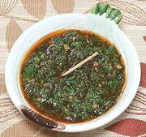

|
Carrot Top ChimichurriCalifornia / Argentina - Chimichurri | ||||
| Makes: Effort: Sched: DoAhead: |
1 cup ** 45 min Yes |
Chimichurri is the essential Argentine condiment for grilled meats, poultry and fish. This version also works well with fried Potatoes, roasted Carrots, and in Sandwiches. | |||
|
------ 1 1/2 3 3 ------ 1/4 1 1/2 1/3 1/3 1/2 1/4 |
--- c c T cl --- t t t c c t t |
-- Herbs Carrot Tops (1) Cilantro (2) Oregano, fresh (3) Garlic ----------- Cumin seed Chili Flake (4) Paprika, smoked Olive Oil, ExtV Wine Vinegar, red Salt Pepper, black |
Measures for all Herbs items are moderately packed after they have been chopped fine. Make - (45 min - all hand chopped, see Chopping),
|